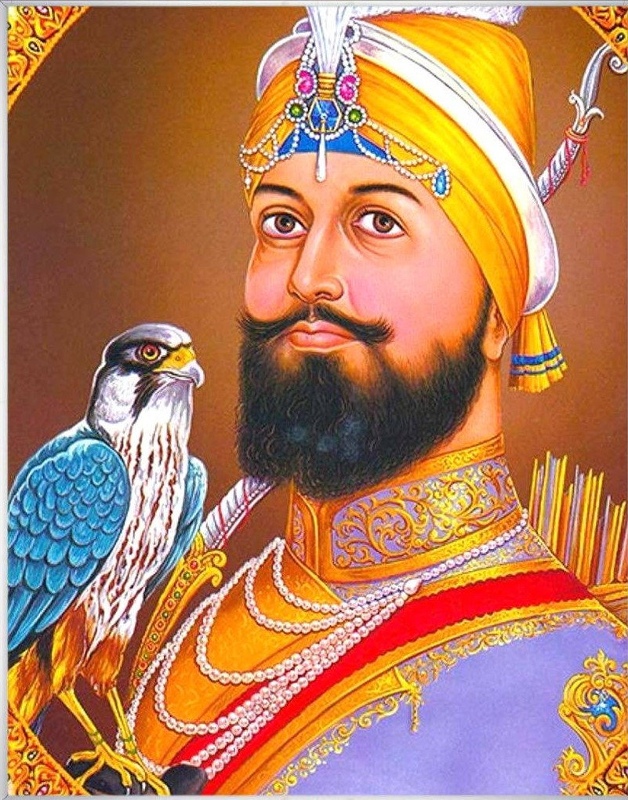

Guru Khalsa Panth successfully sought "Shashter’s" (weapons) of Sri Guru Gobind Singh Ji
These weapons were mostly found due to the efforts of Sardar Nahar Singh. He had written a book called "Documents relating to Sacred Swords of Guru Gobind Singh in England." He published that book in Delhi and distributed it. Dr. Shamsher Singh Ashok had also provided some research material. These Shashter’s include;
1 January brings together four moments of Sikh history, from 1806 to 1966. The main event of the day is from 1966: Guru Khalsa Panth successfully sought "Shashter’s" (weapons) of Sri Guru Gobind Singh Ji. Together they span two periods, from The Sikh Empire of Maharaja Ranjit Singh (1799–1839) to The Punjabi Suba movement (1948–1966). People, places and movements connected with this day include Guru Gobind Singh Ji, Delhi, the Khalsa Panth and Maharaja Ranjit Singh.

Also on this day
- 1806Maharaja Ranjit Singh, under the advise of Kapurthala’s Sardar Fateh Singh Ahluwalia, signed a friendship treaty with the British The signatories to this treaty were Maharaja Ranjit Singh, Fateh Singh, and Lord Lake. Under the treaty Maharaja Ranjit Singh accepted not to help Holkar and British agreed to respect territories of Lahore Darbar. Jaswant Rao Holkar left Amritsar disappointed.
- 1949Akali Dal decided to hold a conference in Delhi, on Feb. 20, 1949, to expose Sikh grievances
- 1961the number of SurSikhs courting arrest for the Punjabi Suba agitation reached 55,000
Historical background
The Sikh Empire of Maharaja Ranjit Singh (1799–1839)
Ranjit Singh of the Sukerchakia misl took Lahore in 1799, was proclaimed Maharaja in 1801 and united the misls into a single state stretching from Peshawar and Kashmir to the Sutlej. He modernised the Khalsa army, gilded Sri Harmandir Sahib, and kept peace with the British under the Treaty of Amritsar (1809).
On this day in this period: 1806 Maharaja Ranjit Singh, under the advise of Kapurthala’s Sardar Fateh Singh Ahluwalia….
The Punjabi Suba movement (1948–1966)
In independent India the Akali Dal campaigned for a Punjabi-speaking state, the Punjabi Suba, through repeated morchas led by Master Tara Singh and Sant Fateh Singh. The demand was met with the reorganisation of Punjab on 1 November 1966, which created present-day Punjab, Haryana and transferred hill areas to Himachal Pradesh.
On this day in this period: 1949 Akali Dal decided to hold a conference in Delhi, on Feb. 20, 1949, to expose Sikh…; 1961 the number of SurSikhs courting arrest for the Punjabi Suba agitation reached 55,000; 1966 Guru Khalsa Panth successfully sought "Shashter’s" (weapons) of Sri Guru Gobind Singh Ji.
People and places of this day
Guru Gobind Singh Ji
The tenth Guru (1666–1708), born at Patna. He created the Khalsa in 1699, led the Sikhs through the battles of Anandpur, Chamkaur and Muktsar, composed works collected in the Dasam Granth, and before his death at Nanded vested Guruship in the Guru Granth Sahib.
Read more → · Mentioned on 24 other days of the year

Delhi
The Mughal capital, where Guru Har Krishan Ji died (Gurdwara Bangla Sahib), Guru Tegh Bahadur Ji was executed (Gurdwara Sis Ganj Sahib) and Banda Singh Bahadur was put to death in 1716. Baghel Singh's forces entered the city in 1783 and marked its Sikh sites.
Read more → · Mentioned on 36 other days of the year
The Khalsa Panth
The order of initiated Sikhs created by Guru Gobind Singh Ji at Anandpur Sahib on Vaisakhi 1699, when the Panj Pyare were the first to receive amrit. With the Guru Granth Sahib, the Khalsa Panth carries the Guru's authority.
Read more → · Mentioned on 7 other days of the year

Maharaja Ranjit Singh
The founder of the Sikh Empire (1780–1839). He took Lahore in 1799, was proclaimed Maharaja in 1801, unified the misls, built a modern army, and covered Sri Harmandir Sahib in gold, giving it the name Golden Temple.
Read more → · Mentioned on 31 other days of the year

Amritsar
The city founded by Guru Ram Das Ji around the sacred pool of Amritsar. As the home of Sri Harmandir Sahib and the Akal Takht it has been the spiritual and political centre of the Sikhs for four centuries.
Read more → · Mentioned on 69 other days of the year

Lahore
The historic capital of Punjab, where Guru Arjan Dev Ji was martyred (Gurdwara Dera Sahib) and Maharaja Ranjit Singh ruled the Sikh Empire from the Lahore Fort. After 1947 it became part of Pakistan.
Mentioned on 49 other days of the year
The Akali movement and its morchas
The Gurdwara Reform movement of 1920–1925, in which jathas of Akali volunteers non-violently took control of historic gurdwaras from mahants. Its campaigns included the keys morcha, Guru ka Bagh and Jaito; tens of thousands were arrested and hundreds killed or injured before the Sikh Gurdwaras Act of 1925. The Shiromani Akali Dal has remained the main Sikh political party.
Mentioned on 113 other days of the year
The Punjabi Suba movement
The campaign of 1947–1966 for a Punjabi-speaking state, led by the Akali Dal under Master Tara Singh and Sant Fateh Singh, with mass morchas in 1955 and 1960–61. It succeeded when Punjab was reorganised on 1 November 1966; Darshan Singh Pheruman died on a fast in 1969 over the transfer of Chandigarh.
Mentioned on 23 other days of the year
Related days in Sikh history
Sources and further reading
- Event list: the Sikh calendar of historical dates published by AllAboutSikhs.com (Gateway to Sikhism).
- Fauja Singh and others, Maharaja Ranjit Singh: Politics, Society and Economy, Punjabi University, 1984.
- Ajit Singh Sarhadi, Punjabi Suba: The Story of the Struggle, Kapur, 1970.
- Harbans Singh (ed.), The Encyclopaedia of Sikhism, 4 vols, Punjabi University, Patiala, 1992–1998.
- Khushwant Singh, A History of the Sikhs, 2 vols, Oxford University Press, 1963–1966 (2nd ed. 2004).
- J. S. Grewal, The Sikhs of the Punjab, The New Cambridge History of India, Cambridge University Press, 1990 (rev. 1998).
- Kahn Singh Nabha, Gur Shabad Ratnakar Mahan Kosh, 1930.
Background sections are written by SikhsInIndia.com from the works listed. Dates in Sikh history sometimes differ between sources and between the Nanakshahi and older Bikrami calendars. To suggest a correction, write to sikhsinindia@gmail.com.